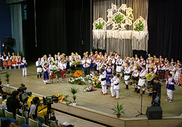
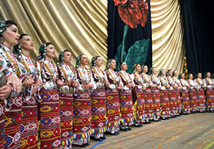

Ансамбъл „Пирин”
Ансамбъл „Пирин” е един от най-известните български фолклорни ансамбли и посланици на българското народно изкуство по света. Създаден през 1954 година с цел издирване и творческо пресъздаване на българския фолклор, за претворяване на сцената красотата на автентични фолклорни образци, както и създаване на произведения на фолклорна основа с участието на съвременни творци – композитори, музиканти, хореографи, художници, поети.В своята творческа биография и репертоар ансамбъл”Пирин” има над 400 заглавия от песни, оркестрови пиеси, музика за хор, солисти и танцови постановки. Носител е на наградата „Кристална лира” 2007 за концерт-спектакъла „Гласът на Пирин” / в памет на проф.К.Стефанов/, наградата „Златен карагьоз” от Международния фолклорен фестивал гр. Бурса –Турция /2007г/ и голямата награда „Златен мост” от Международния фолклорен фестивал „Буюк чекмедже”- Истанбул / 2008 г/. Носител на голямата наградата на Муждународния фолклорен фестивал „Нестинарка” Бругас 2012. Основна заслуга за създаването и израстването на ансамбъл ”Пирин” има проф.Кирил Стефанов – главен художествен ръководител и диригент на ансамбъла от 1956 г. до 2005 г. Той е един от най-изявените композитори и творци в народно изпълнителския жанр в българската музикална култура, професор по хорово дирижиране. В ансамбъл „Пирин” работят вече няколко поколения талантливи артисти – певици, музиканти, хореографи и танцьори.